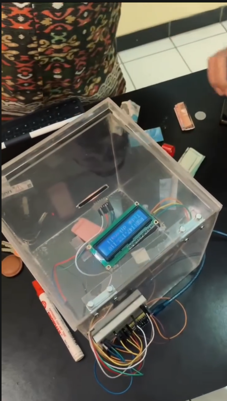
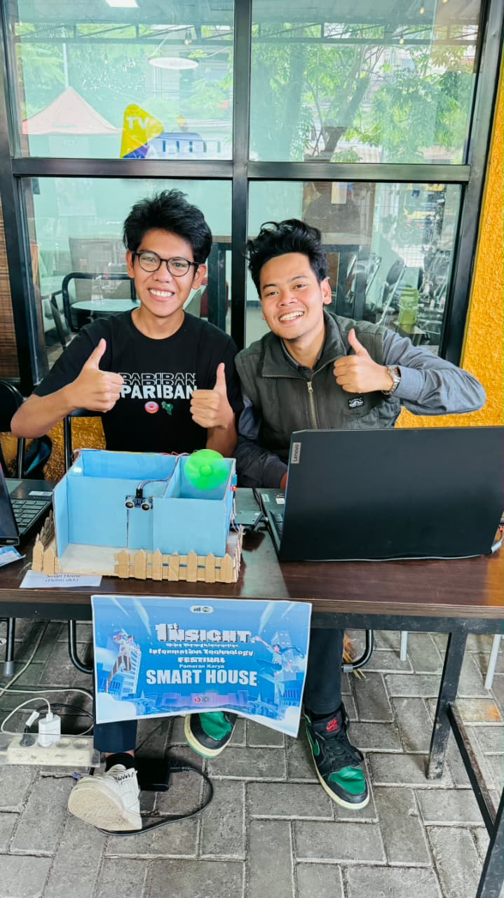
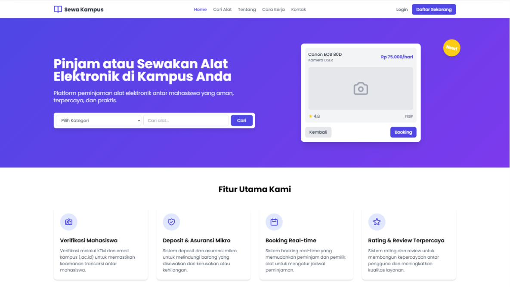
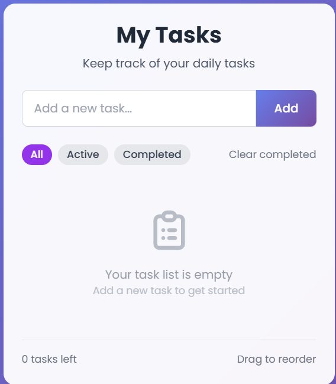
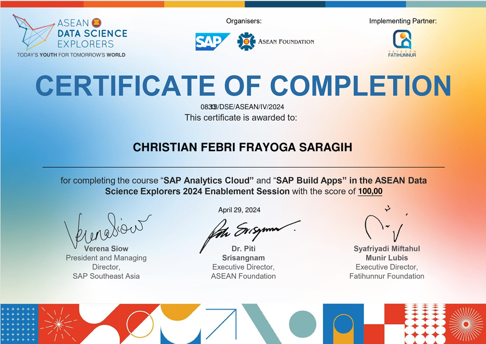
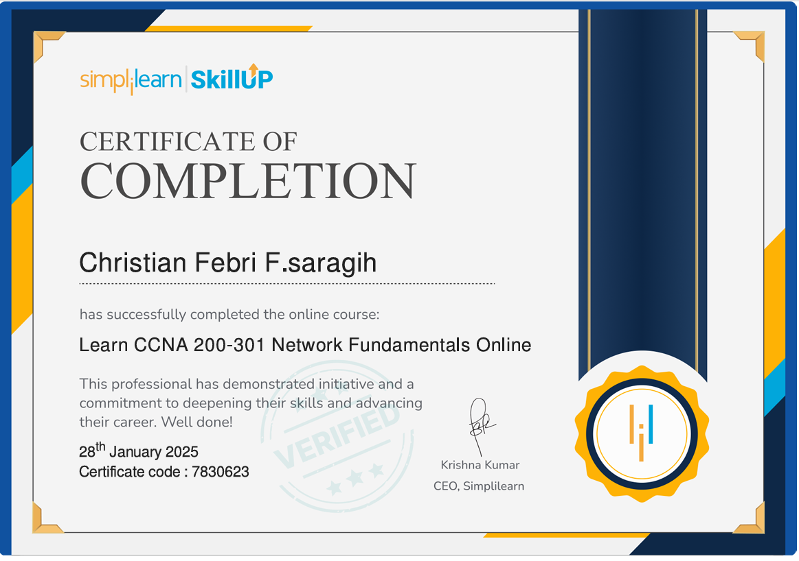

_
Halo, saya Christian Febri Frayoga Saragih. Saya mengembangkan aplikasi web berbasis PHP, Laravel & React, sekaligus membangun proyek embedded system menggunakan ESP32 dan Arduino.
Saya mahasiswa aktif S1 Teknik Informatika Universitas Adhirajasa Reswara Sanjaya dengan IPK 3.8. Minat saya tumbuh pada Software Development, Backend Engineering, Database Management, dan kini meluas ke Internet of Things (IoT).
Saya telah membangun beberapa proyek pribadi, mulai dari website sistem booking kampus menggunakan Laravel & MySQL, hingga prototipe perangkat pintar berbasis ESP32 dan Arduino.
"Saya percaya teknologi bukan hanya soal kode, tetapi bagaimana solusi digital bisa menyelesaikan masalah nyata di sekitar kita."
Selain teknis, saya aktif berorganisasi dan berkepanitiaan — pengalaman yang melatih kepemimpinan, kerja tim, dan manajemen waktu saya.
Kombinasi pengembangan web fullstack dan embedded system untuk membangun produk dari layar hingga perangkat fisik.
Klik salah satu proyek untuk membaca studi kasus lengkapnya — latar belakang, solusi, teknologi, dan peran saya.

Celengan pintar berbasis ESP32 yang mendeteksi transaksi penyimpanan uang otomatis dan menampilkan saldo secara real-time.

Miniatur rumah pintar berbasis Arduino: kontrol lampu via suara, pintu otomatis, alarm gerakan, dan monitoring suhu.

Website penyewaan alat elektronik kampus dengan katalog, sistem booking online, dan manajemen data pengguna.

Aplikasi manajemen tugas harian berbasis ReactJS dengan komponen dinamis, state management, dan filter status.
Memimpin organisasi kemahasiswaan Kristen — mengkoordinasikan tim, program kerja, pengambilan keputusan, dan evaluasi kegiatan.
Mengelola administrasi dan dokumentasi organisasi, menyusun surat & laporan, serta berkoordinasi dengan pengurus dan jemaat.
Bertanggung jawab atas perencanaan, koordinasi tim, dan evaluasi acara kampus berskala besar dari awal hingga pelaksanaan.
Mengelola konten digital, desain publikasi, serta dokumentasi teknis acara.

⌕ Lihat sertifikatProgram regional analisis data & storytelling visual menggunakan SAP Analytics Cloud. Skor 100,00.
2024
⌕ Lihat sertifikatDasar jaringan komputer: model OSI, IP addressing, dan pengelolaan perangkat jaringan.
2025Terbuka untuk kesempatan magang, proyek, atau sekadar berdiskusi seputar web development dan IoT. Jangan ragu menghubungi saya.